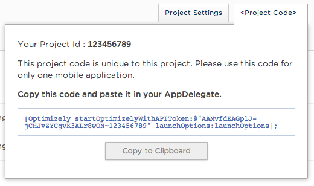
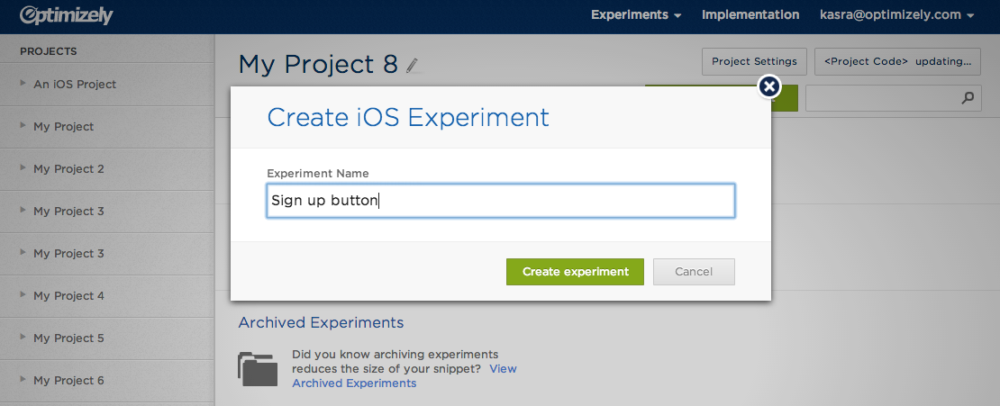
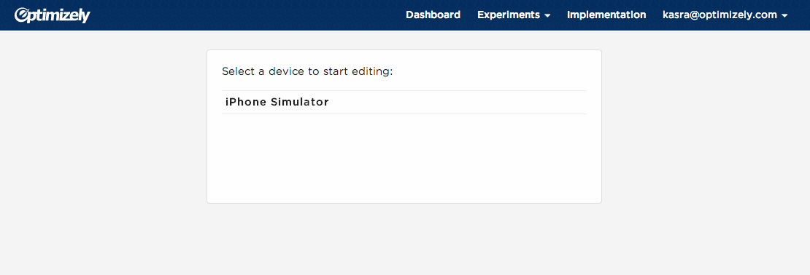
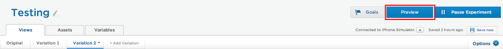
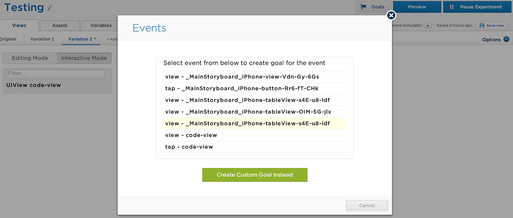
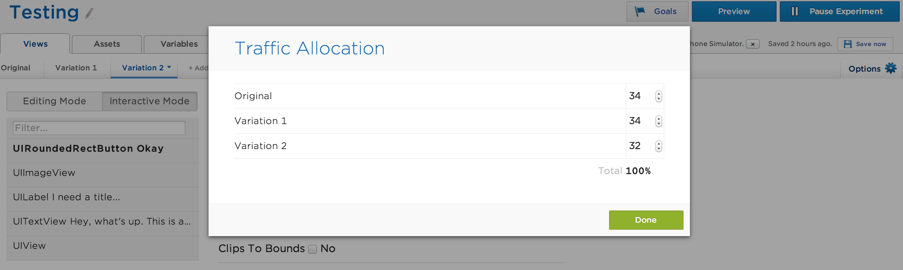

To create an iOS project, select "Create New Project" in the Optimizely Dashboard:
Once you've created a project, please take a look at the Project Code dialog to find your project ID and API key which you will use during installation:

To use Optimizely for iOS you must first integrate the SDK into your app. You can either install the Optimizely SDK using CocoaPods (recommended) or manually.
Refer to CocoaPods Getting Started if you haven't yet configured your project to work with CocoaPods.
Add this line to your project Podfile:
pod 'Optimizely-iOS-SDK', :git => 'git@github.com:optimizely/Optimizely-IOS-SDK.git'
Run pod install from the command line. This will add and install the Optimizely iOS SDK in your generated CocoaPods workspace. Note: by default CocoaPods installs to the first build target in the project.
Now you're ready to write some code! Open your app's prefix header file: MyApp-Prefix.pch under 'Supporting Files' in a standard XCode project. Add the following line of code to the bottom:
#import <Optimizely/Optimizely.h>
4 Add the following to the beginning of application:didFinishLaunchingWithOptions: in your
app delegate:
- (void)application:(UIApplication*)application didFinishLaunchingWithOptions:(...) {
#ifdef DEBUG
[Optimizely enableEditor];
#endif
[Optimizely startOptimizelyWithAPIToken:@"YOUR-API-TOKEN" launchOptions:launchOptions];
// The rest of your initialization code...
}
You can copy-paste your API token from the Project Code dialog within your Optimizely iOS project.
Clone the Optimizely SDK using git clone https://github.com/optimizely/Optimizely-IOS-SDK
Drag Optimizely.framework from the SDK repository into your project. Check "Copy items into destination group's folder" and make sure the appropriate targets are checked.
Open the "Build Phases" tab for the app's target. Under "Link Binary with Libraries", add the required frameworks if they're not already included:
Switch to the "Build Settings" tab. Add -ObjC to the "Other Linker Flags" build setting.
Drag OptimizelyPrepareNibs.py from the root directory of the SDK into your project. Check "Copy items into destination group's folder" and uncheck all targets.
Open the "Build Phases" tab for the app's target. In the app menu (top of the screen) click "Editor" -> "Add Build Phase" -> "Add Run Script Build Phase". In the script field, write:
python "$SRCROOT/OptimizelyPrepareNibs.py"
This script needs to run at the start of the build process (right after Target Dependencies). To make sure this happens, drag the Run Script phase you just added to the top of the list of phases, just under "Target Dependencies". The final result should look something like this:

Now you're ready to write some code! Open your app's prefix header file: MyApp-Prefix.pch under 'Supporting Files' in a standard XCode project. Add the following line of code to the bottom:
#import <Optimizely/Optimizely.h>
Add the following to the beginning of application:didFinishLaunchingWithOptions: in your
app delegate:
- (void)application:(UIApplication*)application didFinishLaunchingWithOptions:(...) {
#ifdef DEBUG
[Optimizely enableEditor];
#endif
[Optimizely startOptimizelyWithAPIToken:@"YOUR-API-TOKEN" launchOptions:launchOptions];
// The rest of your initialization code...
}
There are a few external libraries used by the Optimizely SDK. These ship with the Optimizely SDK so there is no need to install them separately.
This guide will walk you through setting up your first experiment using UIView Swizzling. If you are using Interface Builder or Storyboards, this is already available to you. However, if you are creating your views programmatically, jump ahead to UISwizzling and then return to this guide.
In the Optimizely Application, select the project that you created at the start of the installation process and click "Create Experiment".

Once you have chosen a name and created the experiment, the editor begins waiting for a device to enter edit mode. If you haven't already, run your app in DEBUG mode in the simulator or on a device. You should see the device appear in the editor. If you don't, check out the troubleshooting section of this guide or email support.

Once you have connected your device, it's time to create a variation.

To simulate a user's experience when they are in a particular variation, you can use preview mode. Select the variation you want to see and click the 'Preview' button in the top right corner of the screen. This will cause the app to shut down. When you reopen the app, it will have all the changes you specified in your variation.

All experiments must have at least one goal! We automatically track all view controller transitions and screen taps so that they can easily be used as goals. In order to select a particular transition or screen tap as a goal, open the "Goals" dialogue and click "New Goal" in the bottom right.

On this screen, you will see all the transitions and taps occurring in your app as you interact with it on your device. Select the one that you want to be your goal and click "Done". Optimizely will now track the percentage of your users in each variation that complete that action and the results will appear in our dashboard. If you're curious about the "Create Custom Goal Instead" button, jump ahead to Custom Goals.
By default, an equal percentage of your traffic will see each variation. If you want to change from the default, you can adjust the targeting allocation from the Options menu.

For additional information about any of the experimental approaches below, see the full API Documentation.
The Optimizely editor becomes aware of views it can swizzle by looking for views that have an optimizelyId property. When a view with an optimizelyId becomes visible in the app, the SDK alerts the web editor of its existence, as well as the existence of all of its children. The OptimizelyPrepareNibs.py script assigns an optimizelyId automatically to views created with Interface Builder or Storyboards. For automatically tagged views, the behavior will be as follows:
optimizelyIDs to each UIView prototype in your app; an example might be "MainView-w389gjw" using the OptimizelyPrepareNibs.py script.If you are creating views programmatically, you must set the optimizelyId manually:
UILabel *label = [[UILabel alloc] initWithFrame:...];
label.optimizelyId = @"pricing-title-label";
For any views that you want to swizzle, you should give them a unique optimizelyId. All the subviews of that view will also automatically become visible to the editor, so there's no need to assign an optimizelyId to each subview. A good guideline is that you need to assign an optimizelyId to the view of each of your view controllers.
This allows developers to execute different code paths based on the active experiment and variation. Users will be randomly bucketed into a particular variation and the variationId passed into the block will reflect their bucket. This is the most powerful method for creating experiments, but requires the app to be resubmitted to the app store.
To implement, please see the Code Blocks API Reference
The values of named variables can be affected from the "Variables" tab in the editor. This tab shows all named variables that have been used while the app is connected to the editor. If a named variable is only used in a view that you have not visited yet, it will not appear in the list of named variables until you navigate to that view. There are three ways that the Optimizely editor becomes aware of variables it can change:
Registered variables are the explicit way of setting the value for variables. Variables are defined in the user's code as seen below, with a (unique) associated key. Once a variable is registered, variations can change the value of variables based on their key. For example, you can create an experiment that tests different values for gravity.
NSNumber *gravity = [[Optimizely sharedInstance] numberForKey:@"gravity" defaultValue:@(9.8)];
NSLocalizedString allows for a less explicit way of changing strings, and requires less integration if the user has already localized their app. The Optimizely SDK automatically displays any NSLocalizedStrings in your app and enables you to change their value.
NSString *buttonLabel = NSLocalizedString(@"Sign up!");
Bound variables allow you to set values on class properties. They rely on KVC/KVO.
[[Optimizely sharedInstance] bindNumberForKey:@"retry-count" toKeyPath:@"maxRetries" onObject:foo];
Custom goals allow you to track events other than taps and view changes. There are two steps to creating a custom goal. The first step occurs in the web editor. Click "Goals", then "New Goal", and finally "Create Custom Goal". You will be prompted for a string to uniquely identify your custom goal. In order to track this goal, send this same string as a parameter to
[[Optimizely sharedInstance] trackEvent:(NSString *)]
You can optionally include revenue information with the goal:
[[Optimizely sharedInstance] trackEvent:(NSString *) revenue:(NSInteger)]
For example, if we wanted a goal for users deleting a task with a swipe, we might create a custom goal "User Deleted Task" and then call -trackEvent with this string in our event handler as follows:
- (void)userDidSwipeTask:(id)sender {
[[Optimizely sharedInstance] trackEvent:@"User Deleted Task"];
//The rest of your handler
}
Q: My device is running the app but I can't see it in the editor.
A: First, confirm your device is connected to the internet. If that turns out to be useless advice, make sure that the API token that you passed into [Optimizely startOptimizelyWithAPIToken:@"YOUR-API-TOKEN" launchOptions:launchOptions]; matches what you see in the Project Code box within Optimizely.